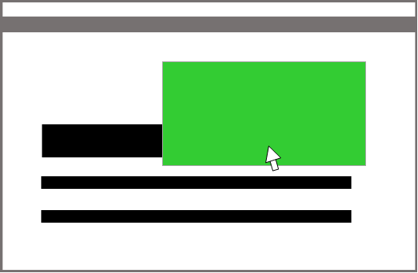

What is Web 2.0+ ?
Web 2.0+ is the enhanced version of Web 2.0 which presents new features and enhancements like better readability, connectivity and more. Besides the traditional aspects presented in Web 2.0, Web 2.0+ adds enhancements simply for better user experience and present information in a classy and user friendly style.
What are these enhancements and improvements?
You can find the different enhancements listed below. You can comment and share your opinions about these enhancements in our forum. You can also suggest some enhancements that you would like to see in Web 2.0+.
Where can I learn more?
Look around our site and join the forum. You can also check out the contacts tab above and reach us if you have more questions.
Better Readability
Web 2.0+ presents larger fonts and sans serif fonts for better readability of content. Contrast between words and background is also highly maximized.
Learn More
Minimalistic Design
Web 2.0+ strips down webpages to the simplest information possible showing only the most important content. This helps users to find what they are looking for more conveniently.
Learn More
Connectivity
Web 2.0+ keeps the essence of Web 2.0 by adding support to social media to contribute in giving information and opinion. It also adds upvoting posts and opinions about a topic to help sort out the most useful and appropriate ones.
Learn More
Lesser Memory
Graphics are established and images are minimalized to ensure lesser memory. Lesser scripts are use and codes are shortened and simplified. These all helps lessen loading time of the webpage.
Learn More

Interactivity
Elements like pictures and buttons respond to mouse movements to keep the page dynamic and it adds more style.
Learn More
Mobile Friendly
With the rise of mobile technology, Web 2.0+ keeps up by being compatible with mobile device browsers and keep its sleek design on mobile devices. Extensive coding is also done for elements to be more flexible.
Learn More